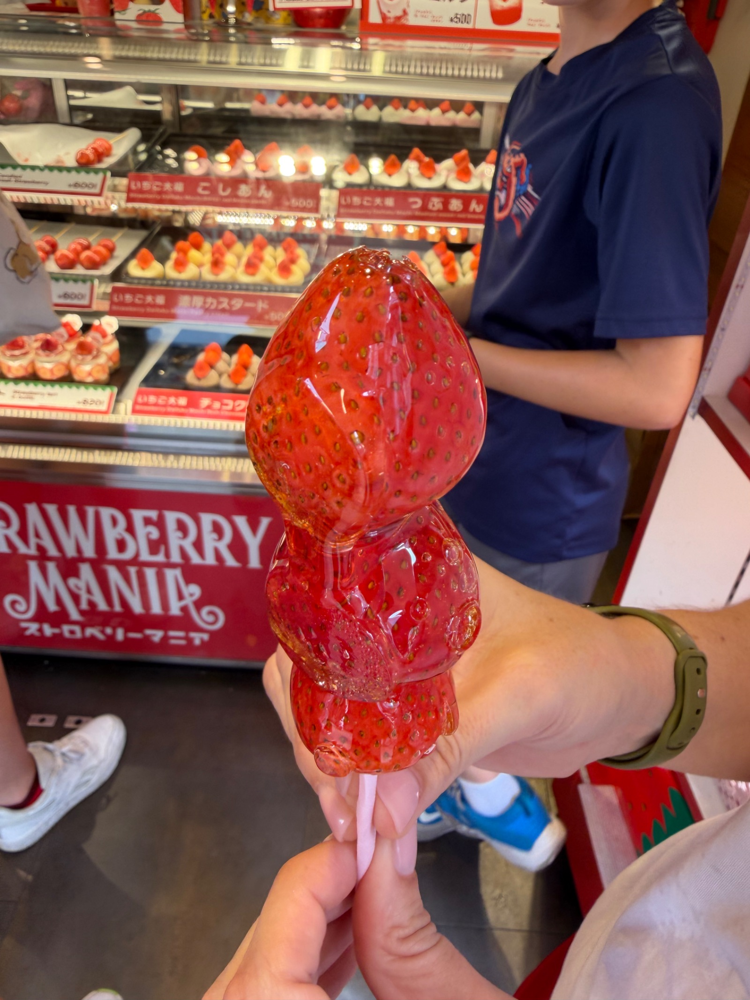
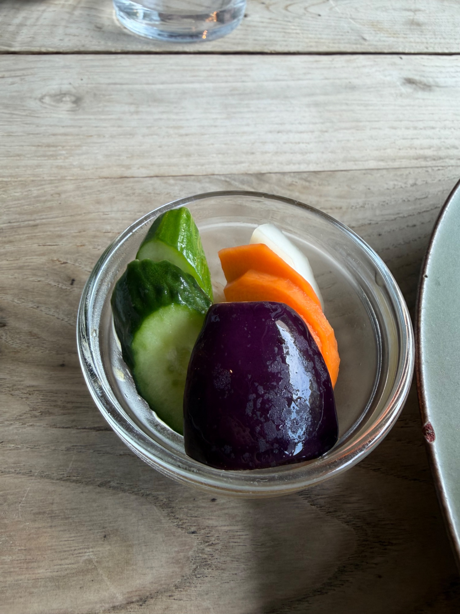
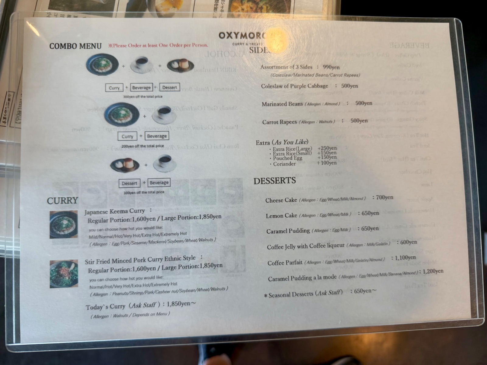
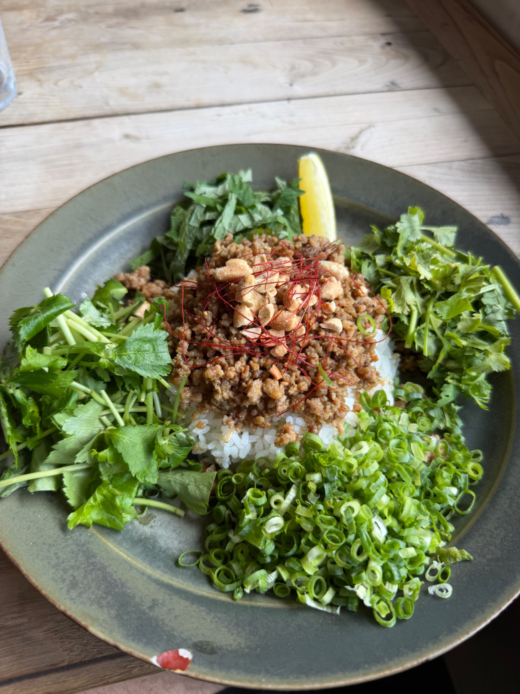
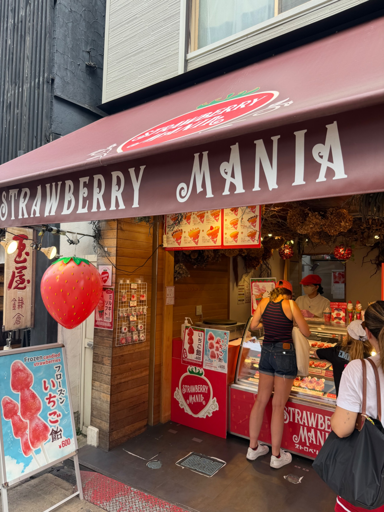
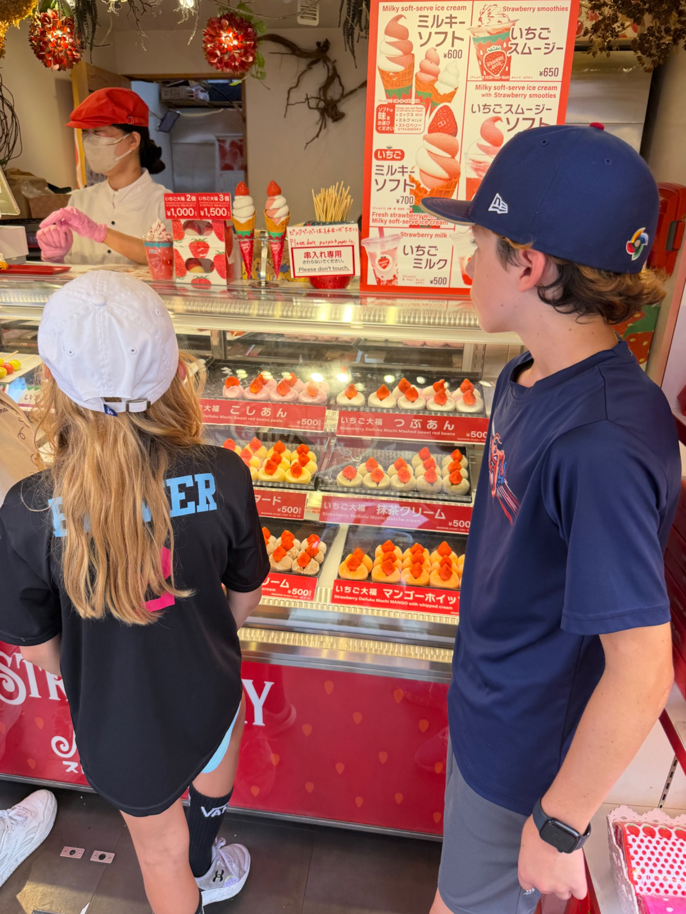
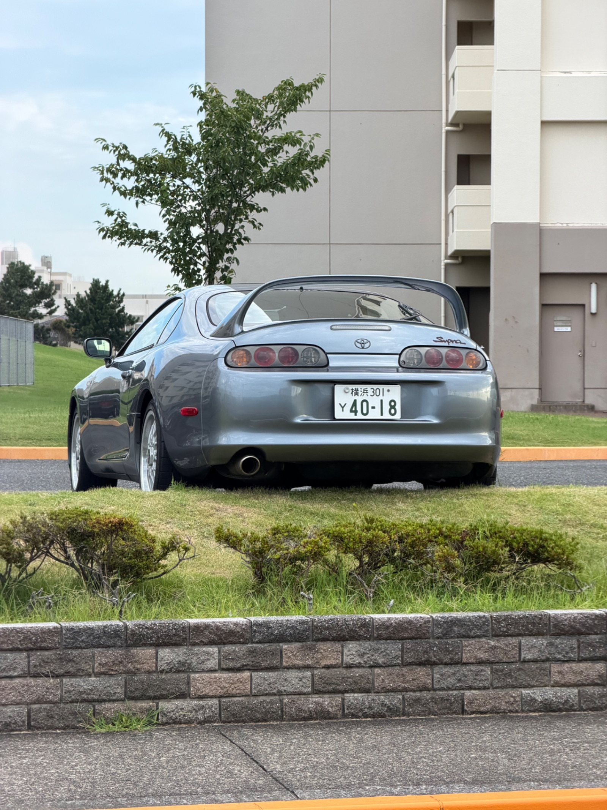

Culinary Exploration in Kamakura: Sweet Strawberries & Savory Ethnic Curry







If you are exploring the historic streets of Kamakura, you already know the area is packed with incredible sights, but the local food scene is just as worthy of a spot on your itinerary. Yesterday, we took our tastebuds on a tour through two distinct local favorites: Strawberry Mania and OXYMORON.
1. Sweet Street Treats at Strawberry Mania
First up was a stop at Strawberry Mania, an absolute haven for strawberry lovers recognizable by its iconic giant strawberry sign right out front!
If you visit, you cannot skip the Ichigo Ame (candied strawberry skewer).
- The Experience: Glossy, crystal-clear hard candy shell wrapped around juicy, fresh strawberries on a stick.
- The Bite: The initial crunch of the sweet candy shell gives way to an explosion of fresh fruit juice. It’s light, super crisp, and the ultimate street-food snack while strolling around Kamakura.
2. A Fresh Take on Curry at OXYMORON
For lunch, we headed over to OXYMORON, a stylish spot known for its unique, modern craft curries and artisanal desserts.
We ordered the Stir Fried Minced Pork Curry Ethnic Style:
- The Presentation: Plated beautifully on ceramic stoneware, the spiced minced pork sits over a bed of rice, completely surrounded by a vibrant rim of fresh green herbs including coriander, green onions, and shiso and topped with crushed nuts and chili threads.
- The Flavor: Bright, fragrant, and perfectly balanced. The freshness of the generous herbs cuts right through the rich, savory warmth of the spiced pork, while a quick squeeze of fresh lemon ties all the layers together.
- The Sides: The meal came accompanied by crisp, refreshing pickled vegetables (cucumber, carrot, and eggplant) served in a small glass dish, a perfect palate cleanser between bites of curry.
Quick Visitor Tips
- Location: Both spots are located conveniently in Kamakura, making them easy to combine into a single afternoon walk.
- Pro Tip for OXYMORON: They offer customizable spice levels ranging from Normal all the way to Extremely Hot, so you can dial in the heat to match your preference!